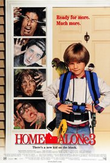

A walk to remember (2002)
Director: Adam Shankman
Writers: Nicholas Sparks (novel), Karen Janszen (screenplay)
Stars: Mandy Moore, Shane West, Peter Coyote |
The story of two North Carolina teens, Landon Carter and Jamie Sullivan, who are thrown together after Landon gets into trouble and is made to do community service.
Harry Potter and the Deathly Hallows
Director: David Yates
Writers: Steve Kloves (screenplay), J.K. Rowling (novel)
Stars: Daniel Radcliffe, Emma Watson, Rupert Grint
As Harry races against time and evil to destroy the Horcruxes, he uncovers the existence of three most powerful objects in the wizarding world: the Deathly Hallows.
Transformers: The Last Knight (2017)
Director: Michael Bay
Writers: Art Marcum (screenplay by), Matt Holloway (screenplay by) | 5 more credits »
Stars: Mark Wahlberg, Anthony Hopkins, Josh Duhamel | See full cast & crew »
Autobots and Decepticons are at war, with humans on the sidelines. Optimus Prime is gone. The key to saving our future lies buried in the secrets of the past, in the hidden history of transformers on Earth.
Home Alone 3 (1997)
Director: Raja Gosnell
Writer: John Hughes
Stars: Alex D. Linz, Olek Krupa, Rya Kihlstedt |
Alex Pruitt, a young boy of nine living in Chicago, fends off thieves who seek a top-secret chip in his toy car to support a North Korean terrorist organization's next deed.
